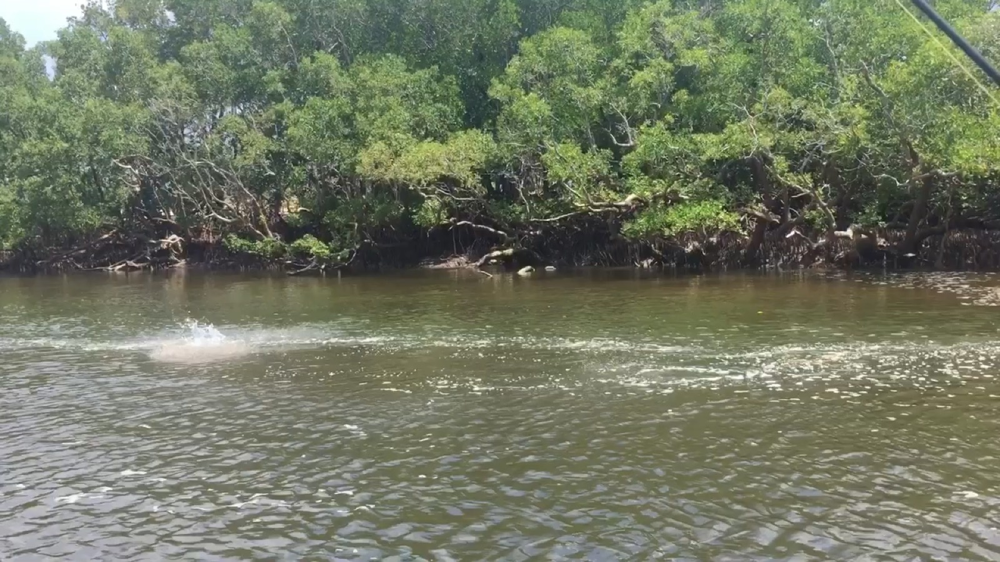

What you'll catch
From 11 segments across the archive.
GTs and their cousins on the blue water. Every quote below is from a real segment — follow it through for the audio and the full transcript.
A lot of water to come out and it, that's what gets everything going, particularly the 1st couple of hours of it, um, these queenfish and trevally just love it, brings all the bait out and, and they have a big beat.
Bag a Barra — 30 October 2026 Bag a Barra, Oz Off Road Radio
You wind it back in really fast and trevally and queenfish and sharks just loved it over in the Kimberleys back in 2011 when I created it.
Fishing on Arvos — 8 July 2026 Fishing on Arvos
Although, I do know that, um, you know, queenfish, Trevally, mackerel, and tuna, and all those sort of cooler water species are in the harbour, and buy them pretty well, when it's not too choppy to be sort of blasting around after them.
Bag a Barra — 4 July 2025 Bag a Barra, Oz Off Road Radio
Everything from Barra to Tuna, Queenies to Trevally, and local highlights, like those lime peeling milkfish.
Darwin's best kept fishing secrets Starlo Gets Reel
We'll get gold, trevally come into Darwin Harbour and starts to really change things around into this sort of build up pattern, which is pretty exciting for us here in the Top End.
Bag a Barra — 6 September 2024 Bag a Barra, Oz Off Road Radio
We were back in Darwin Harbour fishing for mackerel and uh Trevally and queenfish and stuff and there was a couple of fellows out there chasing um bait schools around on jet skis and having a good time.
Bag a Barra — 20 October 2023 Bag a Barra, Oz Off Road Radio
You know, mate, you don't come all this way to catch a trevally that big, right? No, you don't.
Fishing for barramundi in the Top End Fishing Addiction
So, you know, that's when you, you, you're going out to Roach Reef and Dumbing Mirion and fishing those, those pressure points and spits for that last bit of push and the 1st incoming for those bigger trevally, the, the tune of the Queenies.
The Intermediate Line — Ep 80 The Intermediate Line
I do the odd Facebook live in amongst that sort of stuff and we're catching some big queenfish and um big trevally out there.
Bag a Barra — 4 September 2020 Bag a Barra, Oz Off Road Radio
It does, you know, you can walk into a tackle shop and there's 10,000 rods and you can get pretty confused, but basically, like in a nutshell, duck, what we're doing up here with our barra, particularly the casting and our, I guess our light, um, light tackle, sort of pelagic stuff with the queenfish and Trevally and that as well.
Bag a Barra — 1 May 2020 Bag a Barra, Oz Off Road Radio
So, um, yeah, I had the opportunity last week to get out and in amongst the pelagics, so we did really well on some big Spanish mackerel and John trevally and Brassy trevally that sort of took us to the reef every time as, as well as actually picked up some mud crabs still on the way back in to the boat lamp.
Bag a Barra — 15 November 2019 Bag a Barra, Oz Off Road Radio